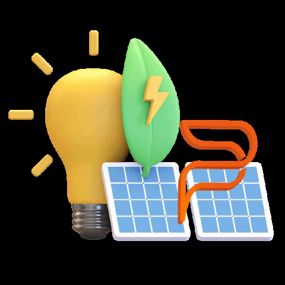

Who Is He?
Elon Musk is a visionary entrepreneur, investor, and engineer whose ventures span multiple industries, from electric vehicles and space exploration to artificial intelligence and infrastructure. As the founder, CEO, and chief innovator behind companies like Tesla, SpaceX, Neuralink, and The Boring Company, Musk has redefined the limits of technology and entrepreneurship.
Business Achievements & impact
.gif)
Revolutionizing Electric Vehicles (Tesla)
Elon Musk transformed the auto industry by proving that electric cars can be fast, stylish, and widely accessible. Tesla pushed global carmakers toward a future of sustainable transportation.

Making Space Travel Affordable (Space X)
With reusable rockets, SpaceX cut the cost of space missions and became the first private company to send astronauts to the ISS. Musk’s goal of colonizing Mars is bringing humanity closer to being multi-planetary.
Connecting the World (StarLink)
Through SpaceX’s Starlink satellites, Musk is providing internet access to remote and underserved regions, reshaping global communication and bridging the digital divide.

Powering a Sustainable Future
Beyond cars, Musk has invested in solar energy and large-scale batteries to reduce reliance on fossil fuels, accelerating the world’s transition to clean energy.